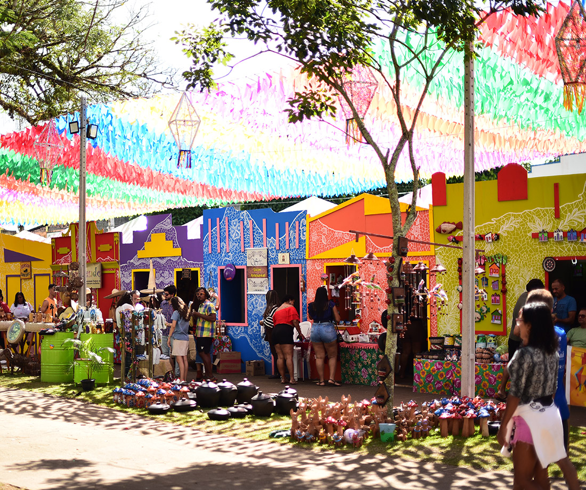
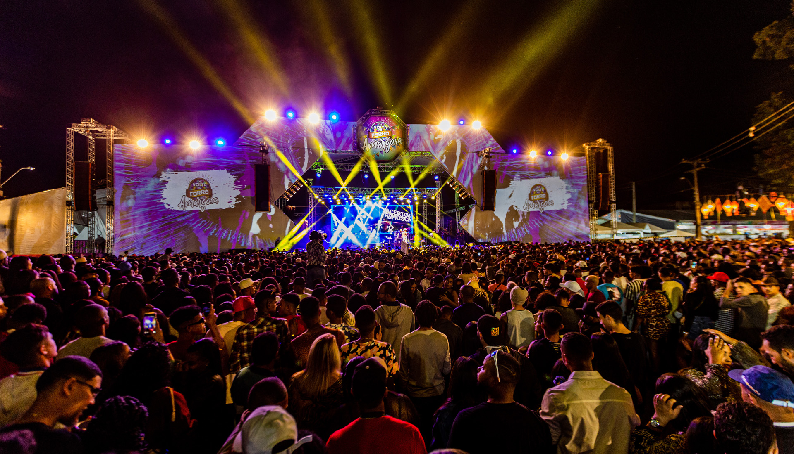
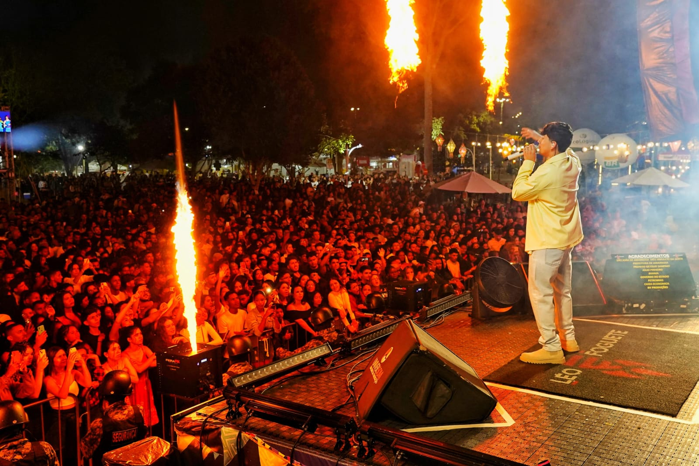

Vila Junina e sabores locais
As casas temáticas criam um circuito de experiências com comidas típicas, bebidas regionais e produtos da agricultura familiar

O São João de Amargosa é reconhecido por valorizar a experiência do forró raiz, os encontros nas praças, a cenografia junina e a energia coletiva que toma conta da cidade durante o período.
Inspirado no portal oficial da festa, este especial destaca a combinação entre grandes momentos musicais, manifestações culturais e o sentimento de pertencimento que transforma cada noite em memória afetiva.

As casas temáticas criam um circuito de experiências com comidas típicas, bebidas regionais e produtos da agricultura familiar

A programação cultural, o clima acolhedor e os espaços decorados fazem da festa um convite para dançar, passear e celebrar
Abra a galeria especial do portal principal para navegar pelos álbuns do evento e acompanhar os diferentes anos da festa